到目前为止，在本书中，我们已经介绍了三种主要类型的神经网络— 前馈神经网络 ( FNNs )、卷积神经网络 ( CNNs )和递归神经网络 ( RNNs )。它们中的每一个都是判别模型；也就是说，他们学会了区分我们希望他们能够预测的类别，例如这种语言是法语还是英语？，这首歌是经典摇滚还是90年代流行？和这个场景中出现的物体是什么？。然而，深度神经网络并不止于此。它们还可以用来提高图像或视频分辨率，或者生成全新的图像和数据。这些类型的模型被称为生成模型。
在本章中，我们将讨论以下与创成式模型相关的主题:
- 为什么我们需要生成模型
- 自动编码器
- 生成对抗网络
- 基于流的网络
我们在本书中学习的所有各种神经网络架构都有一个特定的目的——对一些给定的数据进行预测。这些神经网络中的每一个对于各种任务都有其各自的优势。CNN对于对象识别任务或音乐流派分类非常有效，RNN对于语言翻译或时间序列预测非常有效，而FNN对于回归或分类非常有用。另一方面，生成模型是那些对数据建模的模型， p(x) ，我们可以从中采样数据，这不同于判别模型，后者学习估计条件分布，如p(| x)。
但是这对我们有什么好处呢？我们可以用生成模型做什么？理解生成模型的工作原理对我们来说很重要，这有几个原因。首先，在图像识别中，我们要学会估计一个 p(y i | x) 形式，的高维空间，我们可以用它来预测我们的数据属于哪一类。你要记住，这些模型需要大量的训练数据。现在，我们可以做的是让我们的数据从一个低维的潜在变量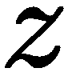中产生，这使得我们的概率函数变成 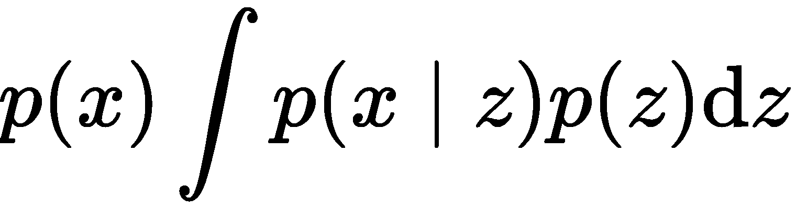 。我们现在要做的是改变我们的预测问题top， (y i | z) 。我们可以利用生成模型的另一种方式是理解我们的神经网络已经学习了什么。正如我们所知，深度神经网络非常复杂，知道它们到底学到了什么或没有学到什么是非常具有挑战性的。所以，我们能做的就是从他们身上取样，并将这些抽取的样本与真实数据进行比较。最后，如果我们缺少数据，我们可以使用生成模型来创建合成数据来训练我们的模型。
既然我们知道了生成模型的用途，让我们探索一些更流行的模型，并了解它们是如何工作的。
自动编码器是一种无监督类型的FNN，它学习使用潜在编码数据重建高维数据。你可以把它想成是试图学习一个恒等式函数(就是把 x 作为输入然后预测 x )。
让我们从下图开始，它向您展示了自动编码器的样子:
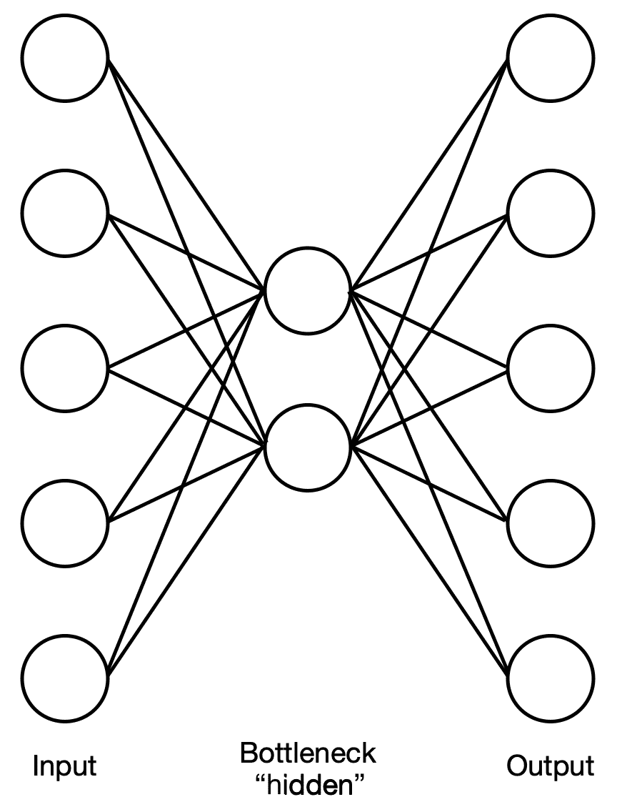
如您所见，网络分为两个部分——编码器和解码器，它们互为镜像。这两个组件通过瓶颈层(有时称为潜在空间表示或压缩)相互连接，瓶颈层的维度比输入小得多。您应该注意到网络架构是对称的，但这并不一定意味着它的权重也是对称的。但是为什么呢？这个网络学什么，怎么学的？让我们看看这两个网络，并探索他们在做什么。
编码器网络接收高维输入，并将其简化为低维潜在代码(即，它学习输入数据中的模式)。这类似于主成分分析和矩阵分解。它的工作原理如下:
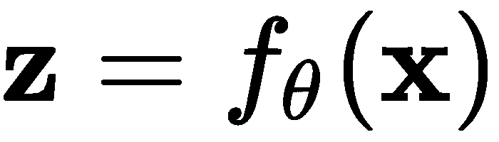
解码器网络将包含关于输入的所有主要信息的低维潜在代码(模式)作为输入，并从中重构原始输入(或尽可能接近原始输入)。它的工作原理如下:
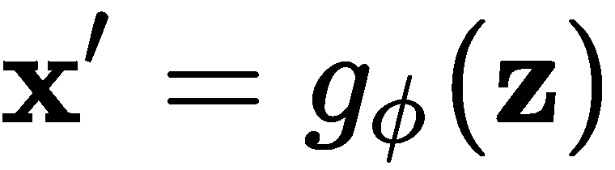
我们可以结合前面的两个等式，将自动编码器表示如下:
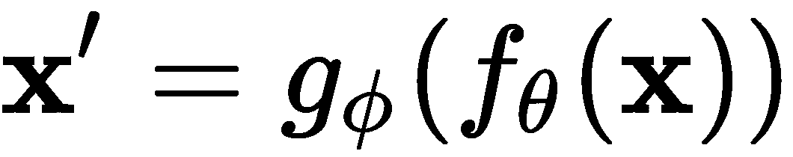
我们的目标是让原始输入尽可能接近(理想情况下，完全相同)重构输出，即 。
。
编码器和解码器都有单独的权重，但我们一起学习参数，以输出重建的数据，这几乎与原始输入相同。在训练期间，我们可以使用 MSE 损失:
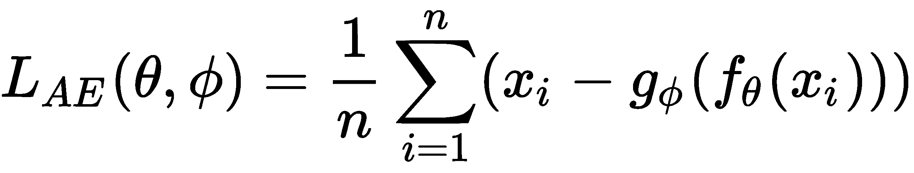
这种类型的自动编码器通常被称为欠完整自动编码器，因为瓶颈层远小于输入和输出层的尺寸。
但是在这个瓶颈层中发生了什么，使得解码器能够从中重建输入呢？这种潜在的编码，是一个高维空间映射到一个低维空间，学习一个流形，这是一个拓扑空间，在每个点上类似欧几里德空间(我们会在第十二章、几何深度学习中对拓扑空间和流形进行更多的阐述)。我们可以将这种流形表示为一个矢量场，并将数据聚类可视化。自动编码器正在学习从这个向量场重建输入。每个数据点都可以在这个流形上找到，我们可以把它投射回更高维的空间来重建它。
假设我们有MNIST数据集，其中包含从0到9的手写数字图像。在下面的屏幕截图中，我们可以看到数据集中的一些图像:
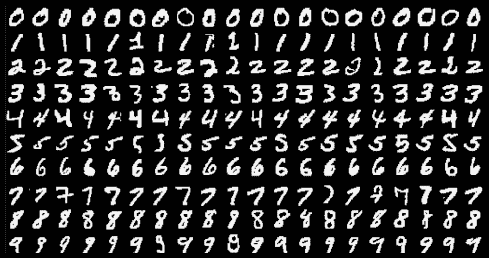
编码器网络将这些数据作为输入，并将其编码到一个更低维度的潜在瓶颈层中，该层包含了这个更高维输入的压缩表示，并以二维的形式展示给我们。该嵌入空间如下所示，其中每种颜色代表一个特定的数字:
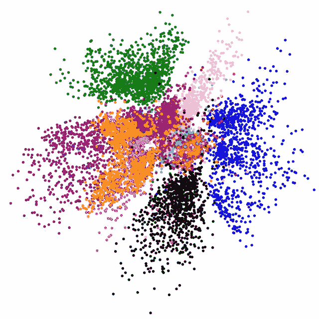
现在，你可能想知道这样的架构有什么用途。通过训练一个模型来重新创建和输出它自己的输入，我们能得到什么？事实证明，我们可以用它来压缩和存储数据，以节省空间，并在需要访问时重建数据，我们可以从图像或音频文件中去除噪声，或者我们可以用它来降低数据可视化的维度。
然而，仅仅因为这种架构可以用于压缩图像，并不意味着这类似于MP3或JPEG等数据压缩算法。自动编码器只能压缩它在训练过程中看到的数据，所以如果它是在汽车图像上训练的，它在压缩马的图像方面将是非常无效的，因为它学习的特征是特定于汽车的，不能很好地推广到马。另一方面，MP3和JPEG等压缩算法不学习它们接收的输入的特征；他们对自己的输入做出一般假设。
在下图中，您可以看到自动编码器将图像压缩到潜在空间中，并在输出中重建它:
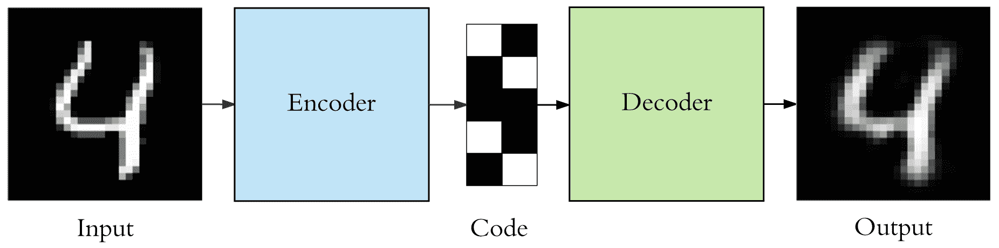
你可以在图中看到，自动编码器已经成功地重建了输入图像，它看起来仍然像数字4，但它不是一个精确的复制品；一些信息已经丢失。这不是训练中的错误；这是故意的。自动编码器被设计成有损，并且只近似复制输入数据，这样它就可以通过对它认为更有用的东西进行优先排序，只提取必要的东西。
正如我们到目前为止在本书中看到的，添加层和深入自动编码器确实有其优势；它允许我们的神经网络捕捉更大的复杂性，并降低所需的计算成本(与变得更宽和更浅相比)。同样，我们可以在编码器和解码器中增加额外的层。在处理图像的情况下尤其如此，因为我们知道卷积层比展平图像并将其用作输入会带来更好的结果。
现在让我们来探索一下自动编码器的一些变体，它们允许我们完成上述任务。
去噪自动编码器 ( DAE )是前面的自动编码器的变体，因为它学习以近乎确定的方式重建被破坏或有噪声的输入。假设我们有一个图像，由于某种原因，它很模糊或者一些像素已经损坏，我们希望提高图像的分辨率(就像电影中他们可以在分辨率相对较低的图像中找到线索一样)。我们可以将它通过我们的DAE，并获得完全重建的图像。
我们首先使用条件分布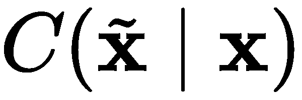——这基本上是一种随机映射——来破坏初始输入，然后它将破坏的样本返回给我们。现在我们有了新的输入，我们的autoencoder将学习如何重建未损坏的数据，即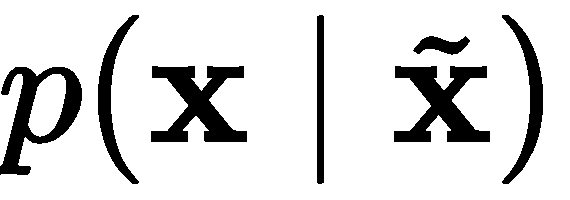——为了训练它，我们的数据将是 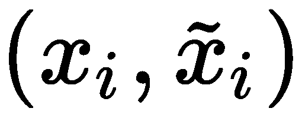 对。我们希望解码器学习的是 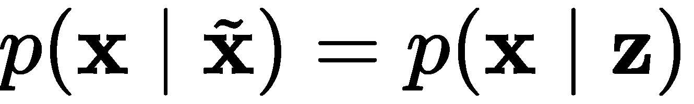，和之前一样， z 是编码器的输出。
上述损坏的工作方式如下:
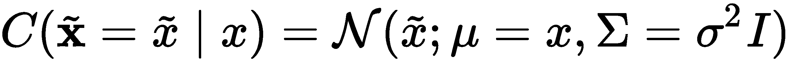
这里，σ2T22】是噪声的方差。
我们可以像训练任何其他FNN一样训练我们的DAE，并在以下项目上执行梯度下降:
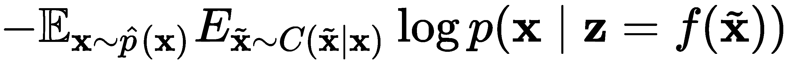
在这里， 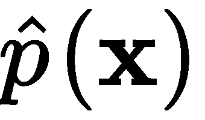 是训练数据的分布。
如前所述，编码器将高维数据投影到一个更低维的空间，称为潜在空间，学习流形的形状。然后，它试图将损坏的数据映射到该流形上或其附近，以确定它可能是什么，然后在重建过程中将其拼凑在一起，通过估计 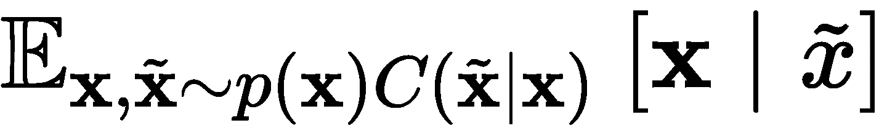 并最小化平方误差 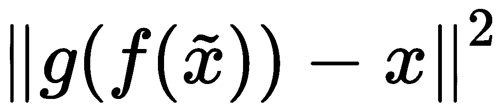 来获得 x 。
我们可以在下图中查看这一过程:
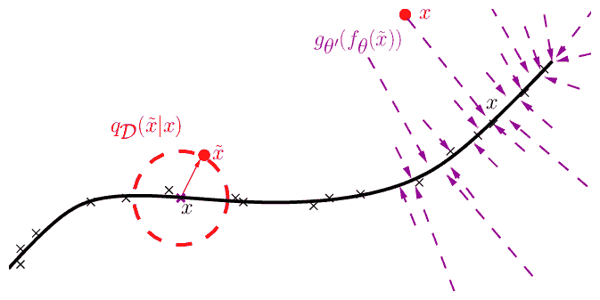
这里，黑色曲线是潜在空间中的已学习流形，你可以看到噪声点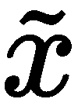被投影到流形上最近的点，以估计它可能是什么。
变型自动编码器 ( VAE )是另一种类型的自动编码器，但有一些特殊的区别。实际上，它不是学习函数 f() 和 g() ，而是学习输入数据的概率密度函数。
假设我们有一个分布， p θ ，用θ参数化。这里，我们可以将 x 和 z 的关系表示如下:
- pθT20】(z):先验
- pθT26】(x|z):可能性(给定潜在空间的输入分布)
- pθ(z|x):后验(给定输入的潜在空间的分布)
上述分布由神经网络参数化，这使它们能够捕捉复杂的非线性，正如我们所知，我们使用梯度下降来训练它们。
但是为什么这种方法的作者决定背离以前学习分布的方法呢？这更有效的原因有几个。首先，我们经常处理的数据是有噪声的，因此，对分布进行建模对我们来说更好。您可能已经猜到了，这里的目标是生成具有与输入相似的统计数据的数据。
在我们继续之前，让我们看看VAE是什么样子的:
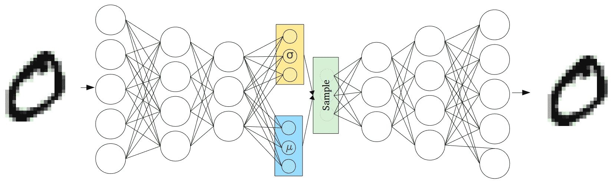
正如你所看到的，它与自动编码器有一些相似之处，但正如我们提到的，我们学习的不是z=f(x)和x’=g(z)，而是p=(z|x)和 p =。然而，因为现在在输入和输出之间有一个随机变量，这种结构不能通过常规的反向传播来训练；相反，我们通过潜在分布的参数进行反向传播。
一旦我们知道了先验和似然分布以及真实参数 θ * ，我们就可以通过重复执行以下操作来生成样本:
- 从 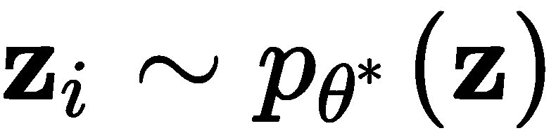中随机生成样本。
- 生成一个 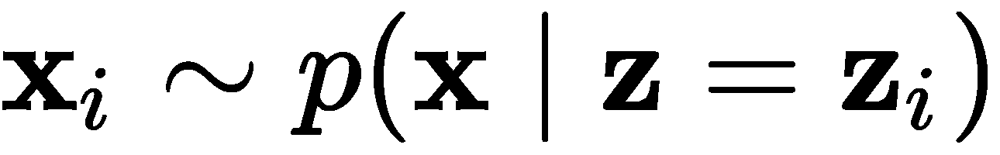 样本。
利用我们在第3章、概率统计中获得的概率知识，我们知道 θ * 应该最大化生成真实数据样本的概率；即 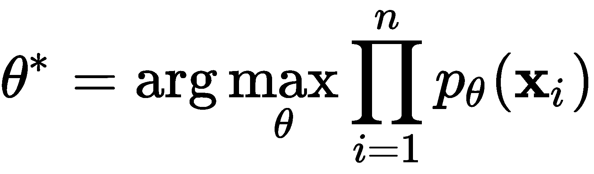 。
现在用于生成数据的公式如下:
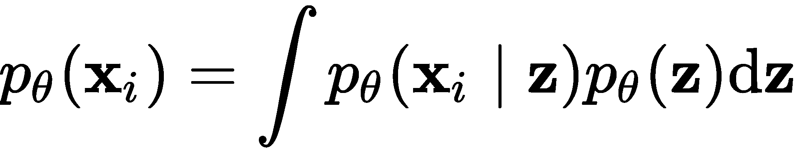
现在，假设我们可以通过重复采样 z i 来近似得到 x 的分布，如下所示:
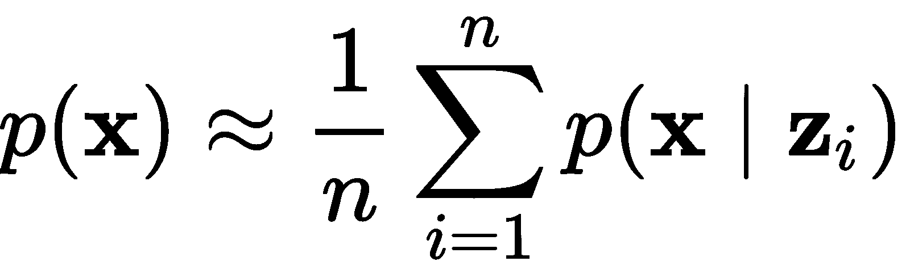
但是，为了做到这一点，我们需要大量样本，其中大部分可能是零或接近零。这是难以解决的(也就是说，在计算上不实用)。所以，我们所做的反而是学习另一种分布(即易处理的分布)- ——近似后验分布， 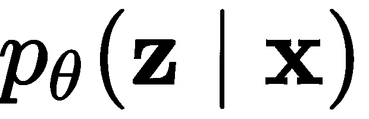 。自然，我们希望这两个分布彼此接近，以便它们能够更好地近似后验分布；因此，我们使用kull back-Leibler(KL)散度来测量它们之间的距离，并尽量将其相对于φ的距离减到最小。我们可以从下面的等式中看出我们是如何做到这一点的:
——近似后验分布， 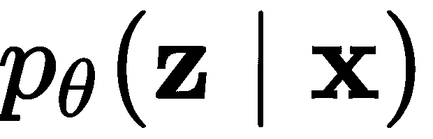 。自然，我们希望这两个分布彼此接近，以便它们能够更好地近似后验分布；因此，我们使用kull back-Leibler(KL)散度来测量它们之间的距离，并尽量将其相对于φ的距离减到最小。我们可以从下面的等式中看出我们是如何做到这一点的:
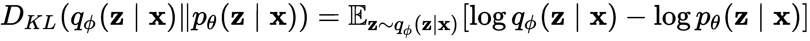
根据贝叶斯法则，我们知道以下几点:
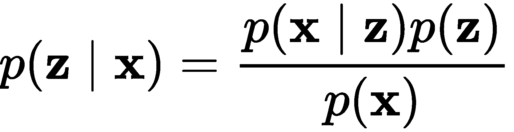
如果我们取它的对数，我们得到以下结果:
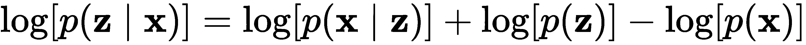
我们可以将其插回到KL散度方程中，得到以下结果:
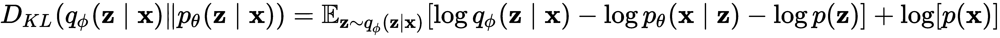
由于 p ( x )不依赖于 z ，所以我们可以将其保留在外面。
我们现在可以将公式重新排列为以下形式:
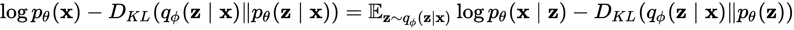
由于  ，这里的目标是最大化 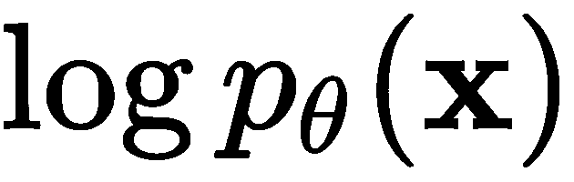 的下界，因为 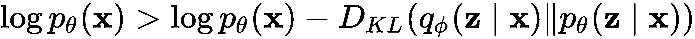 ，我们这样做是因为KL散度的输出是非零和非负的。
，这里的目标是最大化 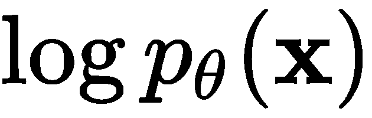 的下界，因为 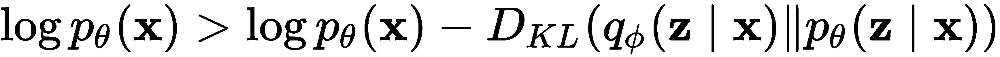 ，我们这样做是因为KL散度的输出是非零和非负的。
但是等等——什么是编码器，什么是解码器？毕竟，这是一个自动编码器。有趣的是，它一直就在我们面前。VAE中的编码器是 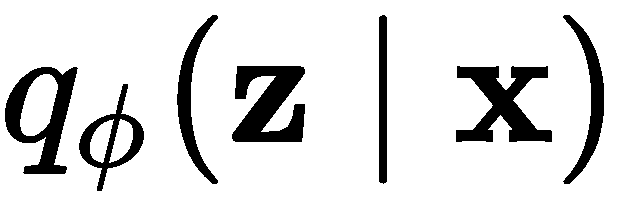 ，通常假设为高斯型:

解码器是 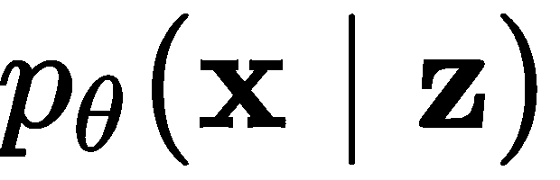。这两者都使用神经网络建模。
生成对抗网络 ( 甘)是一种受博弈论启发的神经网络架构，由Ian Goodfellow于2014年创建。它由两个网络组成——一个生成者网络和一个批评者网络——这两个网络都在一个极大极小游戏中相互竞争，这使得它们都可以通过试图超越对方来同时提高。
在过去的几年中，GANs已经在一些任务中取得了一些惊人的成果，例如创建与真实图像难以区分的图像，在给定一些录音时生成音乐，甚至生成文本。但是众所周知，这些模型很难训练。现在让我们来看看GANs到底是什么，它们是如何带来如此巨大的成果，以及是什么让它们的训练如此具有挑战性。
正如我们所知，判别模型学习条件分布，并尝试预测给定输入数据的标签——即 P(Y | X) 。另一方面，生成模型对联合分布建模——即 P(X，Y)——并且，使用贝叶斯规则，当给定标签时，它们可以生成数据。所以，像VAEs一样，他们学习分布， P(X) 。
批评家网络是一个带参数的鉴别器( D )，参数为 θ (D) ，它的工作就是确定被馈入其中的数据是真是假。生成器网络是一个带有参数 θ (G) 的生成器( G )，其工作是学习从噪声中创建合成数据样本，这些样本可以欺骗鉴别器，使其认为合成数据是真实的，概率很高。
正如我们在本书中看到的，鉴别器模型在学习将输入数据映射到所需的标签(输出)方面表现出色，可以确定图像中是否存在对象，以及在视频中跟踪对象和翻译语言。然而，他们无法像我们能够发挥想象力那样，利用他们所学的知识生成全新的数据。
在我们继续之前，让我们看看这个架构是什么样子的。在下图中，您可以看到gan是如何构成的:
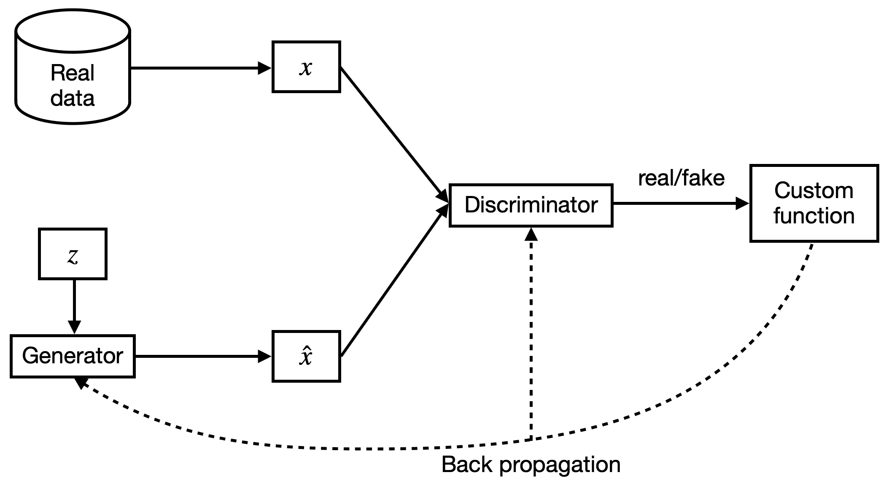
现在我们知道了gan的样子，让我们看看它们是如何工作的。我们可以用下面的等式来总结GAN:
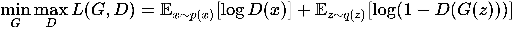
鉴别器的目标是针对 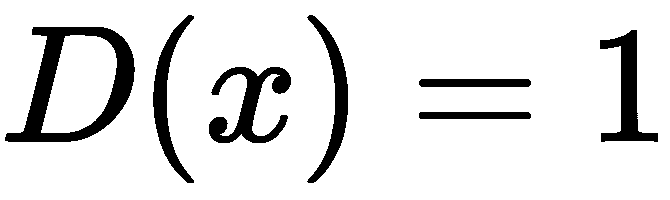 和 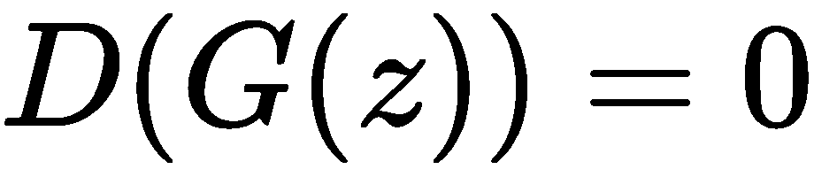 ，而生成器的目标是针对 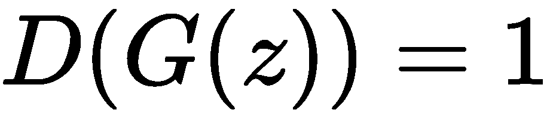 。
由于生成器和鉴别器有不同的目标，自然地，它们会有不同的成本函数。鉴频器和发生器各自的损耗如下:
自然，两个网络都不会直接影响对方的参数。如前所述，由于这是一个受博弈论启发的架构，我们将它视为一个两人游戏，我们的目标是找到 x 如下情况的纳什均衡:
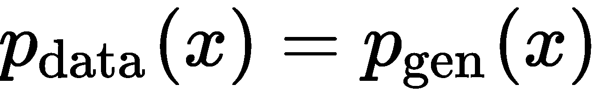
这是一个鞍点。当我们实现这一点时，鉴别器无法区分真实数据和生成的数据。
我们现在如何找到鉴别器的最佳值？首先，我们知道损失函数，从中我们可以找到最佳的 D ( x )值:
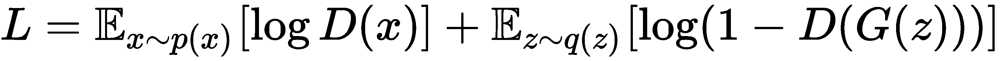
然而，在训练时，生成器理想地输出 x ，因此我们可以将损失函数重写如下:
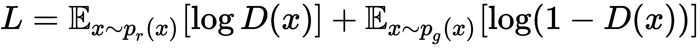
这里，prT3】是真实的数据分布，pgT7】是生成的数据分布。现在，我们有以下内容:

为了让生活变得简单一点，让我们用下面的变量来代替等式的一部分:
由于我们对 x 的所有可能值进行采样，我们可以将前面的三个变量写成如下:
现在，为了找到鉴别器的最佳值，我们将前面的导数等于0，得到如下结果:
所以，当时，即满足我们的条件。损失函数现在变成如下:
既然我们知道了如何找到最佳鉴别器，自然，你可能想知道我们如何找到最佳生成器。我们的目标是最小化真实分布和生成分布之间的Jensen–Shannon(JS)差异，如下所示:

所以， ，它告诉我们，如果我们的生成器事实上是最优的，那么。
好了，这就是甘的工作方式。然而，GANs也存在一些问题。特别地，两个网络的收敛不能保证，因为任一模型的梯度下降不会直接影响另一个，并且模型参数倾向于振荡和不稳定。另一个问题是模式崩溃，这是不正确收敛的结果，这意味着发生器只输出选择的几个产生的样本，它知道这将欺骗鉴别器认为是真实的。由于发生器开始一遍又一遍地输出相同的几个样本，鉴别器学会将它们归类为假的。模式崩溃是一个很难解决的问题。最后，我们的鉴别器可能会变得非常好，以至于发生器的梯度消失，最终它什么也学不到。
如果我们比较VAEs和GANs，两者都是生成模型，我们会看到，对于GANs，我们的目标是最小化两个分布之间的差异，而对于VAEs，我们的目标是最小化两个分布之间的差异界限。这是一个容易得多的任务，但它不会产生与GAN完全相同的结果。
在前面的章节中，我们了解了甘，他们是如何工作的，以及他们在训练中如何面对一些问题。现在，我们将学习瓦瑟斯坦甘 ( WGAN )，它利用了瓦瑟斯坦距离。它是度量给定度量空间上两个概率分布之间距离的函数。假设我们在一个海滩上，我们决定在沙滩上建立一个三维概率分布模型。瓦瑟斯坦距离测量的是将分布移动并重新形成另一个分布所需的最小能量。所以，我们可以说成本是我们移动的沙子的总质量和移动距离的乘积。
这对GANs的作用是平滑梯度，防止鉴别器过度训练。我们的鉴频器和发生器的损耗分别如下:
为什么这个比JS和KL发散表现好？让我们用下面的例子来找出答案。
我们有两个分布， P 和 Q ，参数如下:
现在，让我们用Wasserstein距离来比较KL散度和JS散度。如果 θ ≠ 0，那么我们可以观察到以下情况:
当 出现时，我们可以观察到以下情况:
如您所见，Wasserstein距离相对于KL和JS散度有一些明显的优势，因为它相对于 θ 是可微分的，这提高了学习的稳定性。因此，损失函数现在变成如下:
这就是K-Lipschitz连续——即 为。
可悲的是，尽管WGAN比GAN有优势，但它仍然很难训练。有许多GAN变体试图解决这个问题。
到目前为止，在这一章中，我们已经研究了两种生成模型——GANs和VAEs——但还有另一种，称为基于流的生成模型，它直接学习数据分布的概率密度函数，这是以前的模型所不具备的。基于流的模型利用标准化流，这克服了gan和vae在尝试学习分布时面临的困难。这种方法可以通过一系列可逆映射将简单分布转化为更复杂的分布。我们反复应用变量变换规则，使初始概率密度流过一系列可逆映射，最后得到目标概率分布。
在我们继续了解基于流的模型如何工作之前，让我们回顾一些概念，如雅可比矩阵、计算矩阵的行列式和概率中变量定理的变化，然后继续了解什么是正常化流。
作为复习，雅可比矩阵是一个包含函数一阶导数的 m × n 维矩阵，它将一个 n 维向量映射到一个 m 维向量。这个矩阵的每个元素用 表示。
行列式只能在方阵中找到。所以，我们假设我们有一个 n × n 矩阵， M 。它的行列式可由下式求出:
这里，总和是在所有的 n 上计算的！排列，，σ()告诉我们排列的签名。但是，如果| M |= 0，那么 M 不可逆。
现在，假设我们有一个随机变量， ，它的概率密度函数是z∞π(z)。利用这一点，我们可以生成一个新的随机变量，作为一对一映射的结果，x=f(z)。由于这个函数是可逆的，我们知道z=f-1(x)。那么，我们新的随机变量的概率密度函数是什么呢？根据我们对概率分布的了解，我们知道以下是正确的:
，它的概率密度函数是z∞π(z)。利用这一点，我们可以生成一个新的随机变量，作为一对一映射的结果，x=f(z)。由于这个函数是可逆的，我们知道z=f-1(x)。那么，我们新的随机变量的概率密度函数是什么呢？根据我们对概率分布的了解，我们知道以下是正确的:
从第一章、向量微积分中，我们应该记住，积分是曲线下的面积，在概率上，这总是等于1。曲线下的这个区域可以被切成宽度为δz的无限小矩形，这个矩形在 z 处的高度为π( z )。
知道z=f-1(x)告诉我们 z 的小变化相对于 x 的小变化的比率给出如下:
我们可以这样重写:
现在，我们可以将前面的分布重写如下:
因为我们将使用向量，所以我们可以用多个变量来表示前面的等式，如下所示:
太好了！现在我们已经对这些概念记忆犹新，让我们继续理解什么是正常化流程。
得到一个好的概率密度估计在深度学习中是相当重要的，但做起来往往很有挑战性。因此，我们使用标准化流程，通过对简单分布应用一系列可逆函数，将其转换为更复杂的分布，从而更有效地近似分布。这个名字来源于这样一个事实，即在应用一个映射后，变量的变化使概率密度正常化，而流程意味着这些较简单的变换可以被连续地应用以创建一个复杂得多的变换。还要求这些变换函数易于可逆，并且行列式需要易于计算。
让我们取一个初始分布，对它应用 K 变换(或映射),看看我们如何从中获得 x 。它的工作原理如下:
我们还可以使用以下内容:
这里，我们有以下参数:
-
-

-
- (来自变量变化定理)
行列式是雅可比矩阵。
让我们扩展一下我们用来求pI(zI)的第四个等式，以便更清楚地了解它:
如果我们取两边的对数，我们得到如下结果:
这告诉我们变量序列之间存在的关系，由此我们可以通过展开得到 x 与初始分布 z 0 之间的关系，如下所示:
这个过程被称为规范化流程。
本章到目前为止，我们已经介绍了两种非常流行的生成神经网络架构——VAEs和GANs——这两种架构都非常强大，并且在生成新数据方面带来了巨大的成果。然而，这两种架构也有其挑战。另一方面，基于流程的生成模型虽然不那么流行，但也有其优点。
基于流程的生成模型的一些优势如下:
- 他们有精确的潜在变量推断和对数似然估计，而在VAEs中，我们只能从潜在变量中进行近似推断，而GANs不能推断潜在变量，因为他们没有编码器。
- 它们对于综合和推理的并行化是有效的。
- 它们为下游任务提供了有用的潜在空间，因此能够在数据点之间进行插值并修改现有的数据点。
- 与gan和VAEs相比，它们的内存效率更高。
在本节中，我们将深入了解一种称为实值非体积保持 ( 实NVP )变换的生成概率模型，它可以对高维数据进行易处理的建模。该模型通过堆叠一系列可逆双射变换来工作。
假设我们有一个 D- 维输入 x ，它被 d < D 分成两部分，输出 y 使用以下两个等式计算:
这里，是元素式乘积；s()t()是映射 的缩放和平移函数。
利用我们对标准化流程的了解，我们知道这种方法必须满足两个特性——它必须易于可逆，并且它的雅可比矩阵必须易于计算。现在让我们检查一下这个方法是否符合这两个标准。
在下面的等式中，我们可以看到，事实上，求逆非常简单:
计算耦合层的倒数不需要我们计算s()和【t()的倒数，这很好，因为在这种情况下，这两个函数都是CNN，很难求逆。
现在，我们可以确定雅可比矩阵的计算有多简单:
这是一个下三角矩阵。如果我们想找到雅可比矩阵的行列式，我们可以使用下面的公式:
这两个映射方程告诉我们，当我们在正向计算期间合并耦合层时，一些部分不受影响。为了克服这一点，这种方法的作者使用交替模式耦合各层，以便所有部分最终都得到更新。
在本节中，我们讨论了各种生成模型，这些模型学习真实数据的分布，并试图生成与真实数据不可区分的数据。我们从一个简单的自动编码器开始，并在此基础上理解它的一个变体，该变体使用变分推理来生成类似于输入的数据。然后我们继续学习GANs，它在一个游戏中让两个模型——一个鉴别器和一个生成器——相互对抗，以便生成器试图学习创建看起来足够真实的数据，以欺骗鉴别器认为它是真实的。
最后，我们学习了基于流的网络，它通过对复杂的概率密度应用几个可逆变换，用一个更简单的概率密度来近似一个复杂的概率密度。这些模型用于各种任务，包括但不限于合成数据生成，以克服数据限制并从数据中提取洞察力。
在下一章，我们将学习迁移和元学习，其中包括各种方法，涉及将网络已经为一个任务学习的知识转移到另一个任务的引导学习。我们将区分这两种方法。